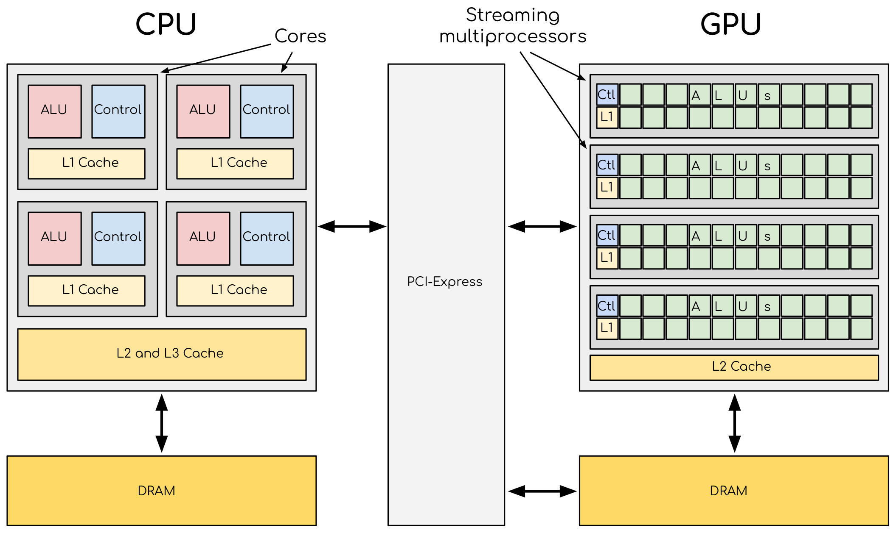
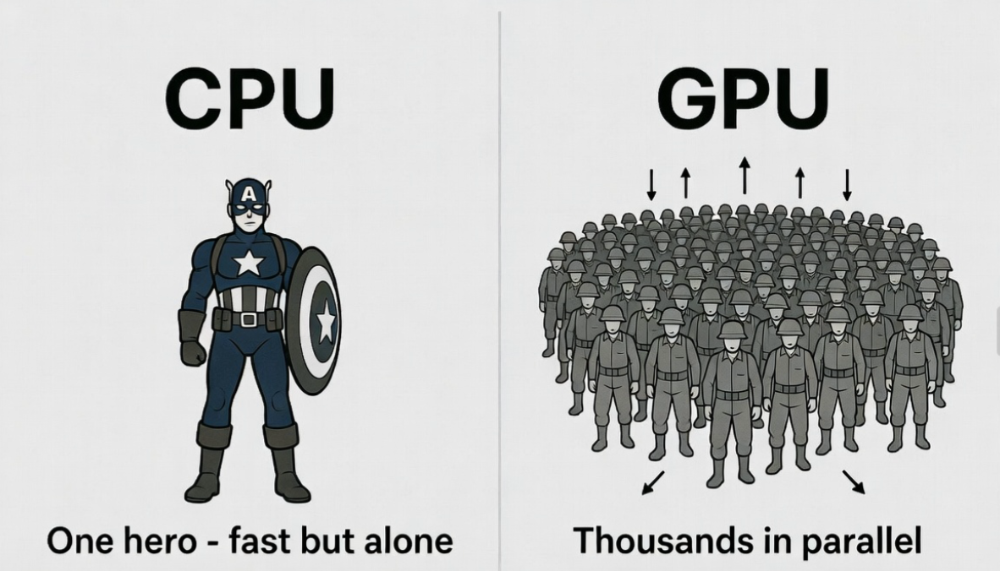
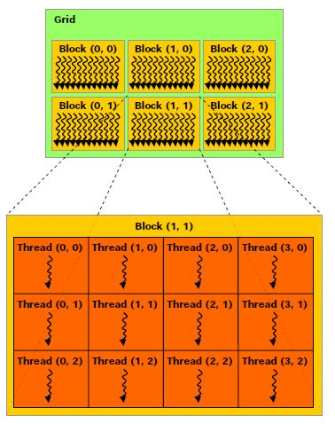
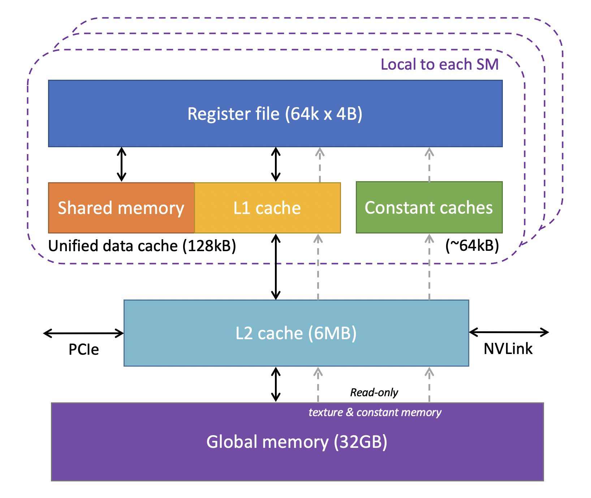
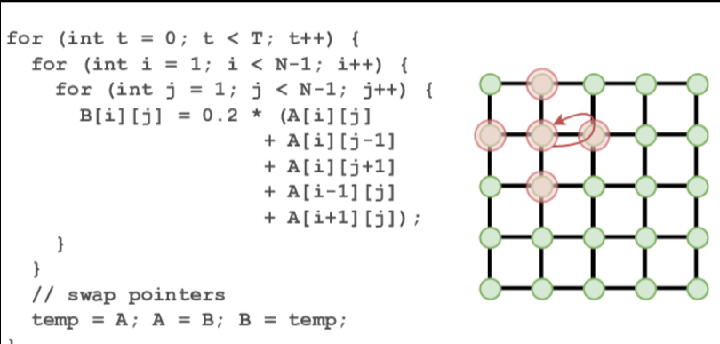

This page introduces GPU computing from a computational physics perspective. The focus is not only on how to launch CUDA kernels, but also on why GPUs can accelerate structured numerical workloads, how memory hierarchy influences performance, and how these ideas connect to stencil-based algorithms such as the Laplace operator and Jacobi iteration.
The main reason is architectural specialization. A CPU is optimized for low-latency execution, complex control flow, branch prediction, and strong single-thread performance. A GPU is optimized for throughput: it devotes a much larger fraction of its hardware budget to arithmetic units and parallel execution resources. This makes it especially effective when the same operation must be applied to many data elements.

To understand this intuitively, think of a CPU as a highly skilled hero—powerful and versatile, but working alone. A GPU is like a massive legion of soldiers; individually simpler, but capable of executing thousands of identical tasks simultaneously in parallel.

In scientific computing, this throughput-oriented architecture is ideal for structured-grid PDE solvers or stencil-based algorithms. Let’s look at the practical outcome in a Finite-Difference Time-Domain (FDTD) electromagnetic simulation:
FDTD Simulation: Left: CPU execution. Right: CUDA-accelerated execution showing significant speedup.
CUDA expresses GPU work through a kernel launched over many threads. These threads are organized hierarchically into threads, blocks, and grids. In numerical computing, one thread is often mapped to one array element, one mesh node, or one grid point.

In one dimension, the global index is usually written as
int i = blockIdx.x * blockDim.x + threadIdx.x;In two dimensions, the same pattern is extended to a pair of indices:
int i = blockIdx.x * blockDim.x + threadIdx.x;
int j = blockIdx.y * blockDim.y + threadIdx.y;This indexing logic is the bridge between the numerical grid and the CUDA execution hierarchy.
Many CUDA kernels are limited less by arithmetic throughput than by data movement. For this reason, memory hierarchy is central to performance. Fast storage levels are smaller and closer to computation, while large-capacity levels are slower.

A clean entry point into CUDA stencil programming is the 1D discrete Laplace operator,
This is a one-dimensional stencil update, not yet a full PDE solver. It is useful pedagogically because it separates the memory-access question from the broader complexity of iterative boundary-value solvers. The benchmark compares four implementations:
__ldg()__global__ void ker_laplace_naive(float* y, const float* x, int n) {
int i = blockIdx.x * blockDim.x + threadIdx.x;
if (i >= n) return;
int prev = (i == 0) ? n - 1 : i - 1;
int next = (i == n - 1) ? 0 : i + 1;
y[i] = x[next] - 2.0f * x[i] + x[prev];
}This example is ideal for introducing thread indexing, cache-aware stencil execution, and the difference between architectural assumptions and measured performance.
The natural extension is the 2D five-point stencil,
This stencil is fundamental in computational physics and engineering. It appears in diffusion, electrostatics, heat conduction, pressure equations, and iterative relaxation methods. The 2D version is more realistic than the 1D case because it introduces two-dimensional indexing, more natural spatial locality, and a stronger connection to PDE discretization.

__global__ void ker_laplace2d_naive(float* y, const float* x, int nx, int ny) {
int i = blockIdx.x * blockDim.x + threadIdx.x;
int j = blockIdx.y * blockDim.y + threadIdx.y;
if (i >= nx || j >= ny) return;
int im = (i == 0) ? nx - 1 : i - 1;
int ip = (i == nx - 1) ? 0 : i + 1;
int jm = (j == 0) ? ny - 1 : j - 1;
int jp = (j == ny - 1) ? 0 : j + 1;
int c = j * nx + i;
int xm = j * nx + im;
int xp = j * nx + ip;
int ym = jm * nx + i;
int yp = jp * nx + i;
y[c] = x[xp] + x[xm] + x[yp] + x[ym] - 4.0f * x[c];
}In this tutorial, the 2D benchmark is implemented in a scaling-oriented form so that the same code can be used to study how different memory strategies behave as the grid size increases.
The following benchmark was obtained on an NVIDIA Tesla T4 using a fixed block size of 16 × 16. Four memory-access strategies were compared for a 2D five-point Laplace stencil with periodic boundary conditions.
| Grid size | Naive (ms) | LDG (ms) | TexObject (ms) | Shared (ms) |
|---|---|---|---|---|
| 1024 × 1024 | 0.0398 | 0.0397 | 0.0468 | 0.0674 |
| 2048 × 2048 | 0.1432 | 0.1431 | 0.1644 | 0.2377 |
| 4096 × 4096 | 0.5662 | 0.5656 | 0.6569 | 0.9082 |
| 8192 × 8192 | 2.2476 | 2.2511 | 2.6381 | 3.6918 |
As the grid size increases, the runtime of all four methods grows approximately in proportion to the number of grid points. This is exactly what one expects from a stencil that performs a nearly fixed amount of work per point. The benchmark therefore behaves like a classical memory-bound scaling test rather than a compute-bound kernel.
The ranking is essentially unchanged across all tested grid sizes:
Naive ≈ LDG < TexObject < SharedThis consistency is itself an important result. It shows that the kernel’s limiting mechanism does not fundamentally change over the tested range. The performance is dominated by memory movement, and the relative overheads of the different implementations remain structurally similar from 1024² to 8192².
The naive and LDG versions are nearly indistinguishable in performance. This means that, for this regular row-major stencil on a Tesla T4, the default hardware cache hierarchy is already highly effective. The read-only path provided by __ldg() does not produce a meaningful additional gain in this case.
The texture-object version is consistently slower. This indicates that texture fetches do not provide an advantage for this simple five-point stencil. The access pattern is regular enough that the ordinary caching path already handles the working set efficiently.
The shared-memory version is slowest at every grid size. The reason is that this kernel is too lightweight for explicit tiling to pay off. Halo loading, corner handling, shared-memory bookkeeping, and block synchronization all add overhead. In this benchmark, those costs are larger than the reduction in global-memory traffic.
In earlier CUDA generations, texture memory often provided a noticeable advantage for stencil-style workloads. The reason was architectural: the texture path had a dedicated cache optimized for spatial locality, and regular 2D access patterns could benefit from it more clearly than from ordinary global-memory loads.
Over time, GPU memory systems evolved substantially. Modern architectures include much more capable cache hierarchies, and in several generations the L1 cache and texture-related caching behavior became increasingly integrated. CUDA also introduced __ldg(), which routes read-only data through a specialized cache path derived from the same broader memory-system evolution.
As a result, the historical advantage of texture memory has been weakened for many regular stencil workloads. In this benchmark, that effect is very clear: the naive implementation and the LDG version perform almost identically, while the texture-object version does not improve performance. This strongly suggests that the ordinary cache hierarchy is already effective enough for this access pattern.
This does not mean that texture memory is obsolete. It can still be useful for irregular access patterns, image-style kernels, gather operations, or cases that benefit from hardware interpolation. However, for a simple row-major five-point Laplace stencil, the modern cache system largely removes the historical reason to expect a texture-memory advantage.
The sequence used here works well in teaching because it progresses from simple to physically meaningful examples: